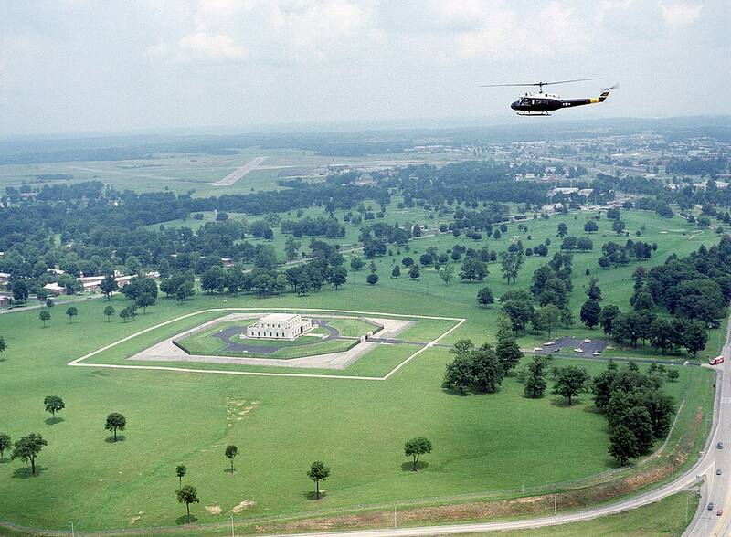

Fort Knox
Kentucky

Army post and home of the U.S. Bullion Depository. 1
Open in the interactive Watcher
Sources
- Fort Knox Wikipedia
Kentucky

Army post and home of the U.S. Bullion Depository. 1
Open in the interactive Watcher